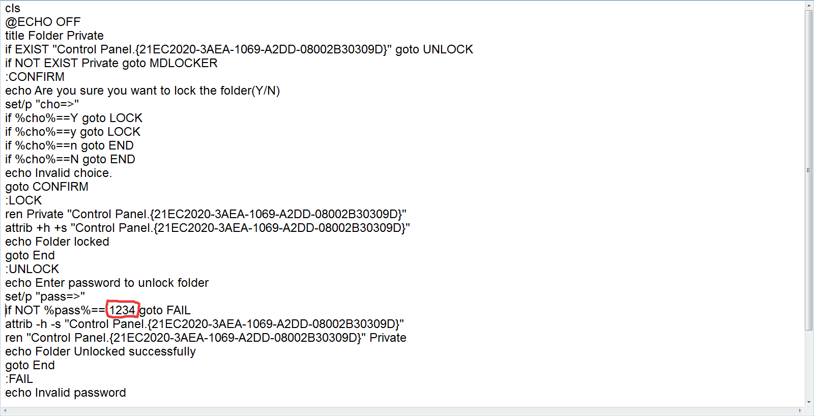

Locked Folder Tutorial
1. Download the locked folder creator.
2. Move the file to the place where you desire the locked folder to be created.
3. Run the file. Now you should see a folder called "Private".
4. Right click on Passlock.bat it and click "Edit"
5. Go to line 23 and change 1234 to the password you desire for the folder.

6. Save the file and close it.
Now, when you want to lock the folder, run the Passlock.bat file and type "y" or "Y".
If you want to unlock the folder, run the Passlock.bat file and enter your password.